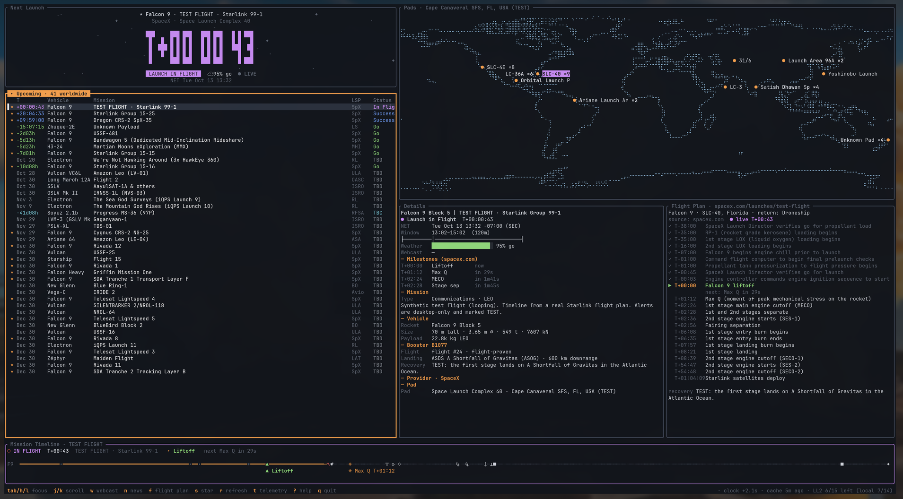
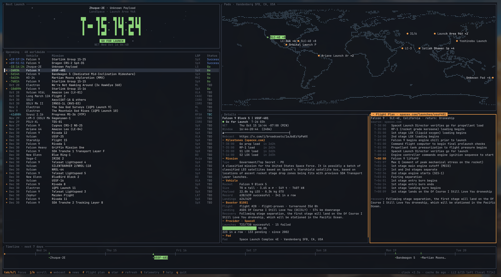
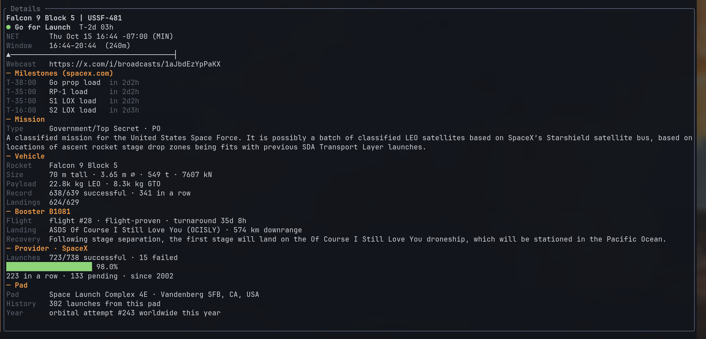
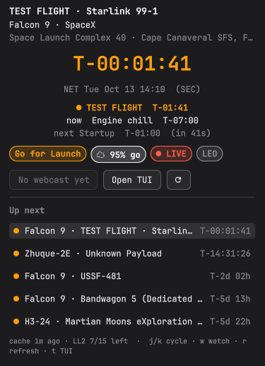

Rocket launch countdowns in the Omarchy bar
OmaLiftoff tracks upcoming launches worldwide from all providers (SpaceX, Rocket Lab, ULA, Blue Origin, Arianespace, ISRO, CASC, Roscosmos and others) using Launch Library 2. It adds a countdown to the Omarchy bar, a terminal dashboard, and desktop or phone alerts. SpaceX publishes flight plans for its launches, so SpaceX launches also get event-by-event timelines. No account and no telemetry.

Screenshots
Taken on Omarchy in Ghostty. The Upcoming list includes launches from all providers. With a SpaceX launch selected, the Flight Plan pane shows its spacex.com timeline. During a flight, the bottom pane shows an animated mission timeline.



Features
One Rust binary (daemon, CLI, TUI) and a QML bar widget.
Bar countdown
Falcon 9 · T-02:14:07 in plain theme text. The rocket pulses in your accent color while live and turns red on a hold. While live the current event is added.
TUI
Upcoming launches from all providers, with details, a world map of pads, news and a 7-day timeline. Vim keys and mouse.
Flight plans
SpaceX launches get the spacex.com flight plan (prop load, Max Q, MECO, stage sep, landing, deploy), with the current event highlighted. Other launches use the LL2 timeline when there is one.
Live mission timeline
An animated T-/T+ axis with progress fill, a rocket with exhaust flicker while engines burn, and a separate booster lane after staging.
Alerts
Desktop alerts via mako with a Watch button, plus optional phone push via ntfy. Alerts cover lead times, holds, slips and new launches. Each one is sent once.
T-0 sync
Spends LL2's 15 free calls per hour so the last sync lands at T-5 s. Webcast sync keys adjust the clock to match the stream.
Install
Everything runs as your user; no root needed. The installer only writes to ~/.local/bin, ~/.local/share/liftoff, ~/.config/liftoff, the systemd user unit and the plugin folder.
Add the bar widget
Omarchy clones the plugin and asks for a bar section.
$ omarchy plugin add https://github.com/0xRainy/omaliftoff --enableInstall the companion
Click set up OmaLiftoff on the bar, or run the bundled installer.
$ bash ~/.config/omarchy/plugins/liftoff.tracker/install.shUse it
$ liftoff tui # mission control $ liftoff setup # ntfy phone push + starred providers $ liftoff test-notify # desktop smoke test $ liftoff doctor # service, cache, API budget, plugin
TUI keys
The mouse also works: click a pane to focus it and scroll to move through it.
| Tabhl | Move focus: Upcoming, Details, Flight Plan, Pads |
| jkgG | Scroll / select in the focused pane |
| [] | Scroll Details from anywhere |
| f | Toggle the flight plan pane (SpaceX flight plans, else the LL2 timeline) |
| wp | Open the webcast / spacex.com mission page |
| n | News for the launch (Spaceflight News API) |
| s | Star the provider (extra lead alerts) |
| <>M= | Webcast sync: shift T-0 by ∓1 s, mark liftoff now, clear |
| rt | Refresh (budget-aware) · telemetry pane |
| Ctrl-xtf | Hidden test flight: a looping synthetic Falcon 9 (desktop alerts only) |
| ?q | Help · quit |
Data sources
Only the companion talks to the network. The bar widget reads the local cache. Not affiliated with The Space Devs, SpaceX or Omarchy.
Launch Library 2
By The Space Devs: launches from all providers worldwide, with vehicles, pads and status. Free tier 15 requests/hour; OmaLiftoff stays under it.
The Space DevsSpaceX content API
The API behind spacex.com launch pages: detailed flight plans for SpaceX launches only. Undocumented and may change or vanish; OmaLiftoff falls back to the LL2 timeline.
Unofficial